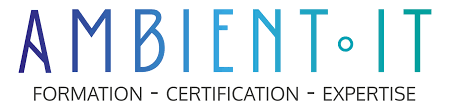

Pendant mon stage, j’ai travaillé sur deux projets principaux :
J’ai également mené d’autres missions : création de pop-ups dynamiques, nettoyage de la base de données, traduction de documents, ajout d’une barre de recherche, etc.
Pour réaliser ces tâches, j’ai utilisé des outils comme WordPress, FileZilla, VSCode, Postman, PHPMyAdmin, ainsi que des langages tels que PHP, JavaScript, SQL, HTML/CSS et Shell.
Ce stage m’a permis d’appliquer concrètement les compétences acquises en BUT Informatique : analyse de problèmes, développement web, gestion de bases de données, automatisation, mais aussi organisation et autonomie. J’ai appris à m’adapter à des projets existants, à travailler directement sur un site en production, à documenter mes démarches et à solliciter l’aide de mon tuteur lorsque nécessaire. Cette expérience m’a fait progresser techniquement et m’a donné confiance dans ma capacité à apporter des solutions concrètes en entreprise.